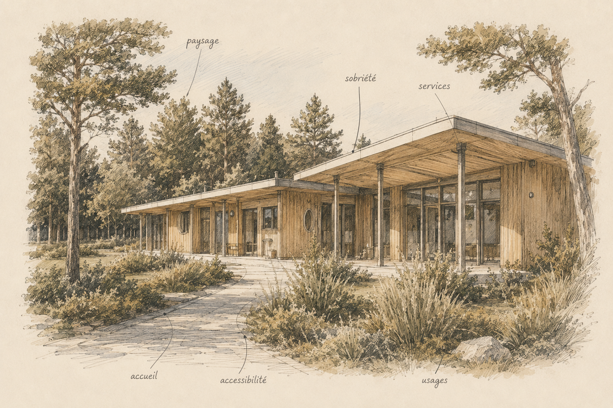

Tourisme & loisirs
Réinventer une destination
Le contexte → ce que nous observons → la décision → la transformation.
→Projets
Nous racontons les projets par le raisonnement qui les a rendus possibles, pas seulement par leur image finale.
Tourisme & loisirs
Le contexte → ce que nous observons → la décision → la transformation.
→
Territoires
Le contexte → ce que nous observons → la décision → la transformation.
→
Hospitalité
Le contexte → ce que nous observons → la décision → la transformation.
→
Équipements publics
Le contexte → ce que nous observons → la décision → la transformation.
→Première étape
Présentez-nous votre territoire, votre bâtiment ou votre problématique.